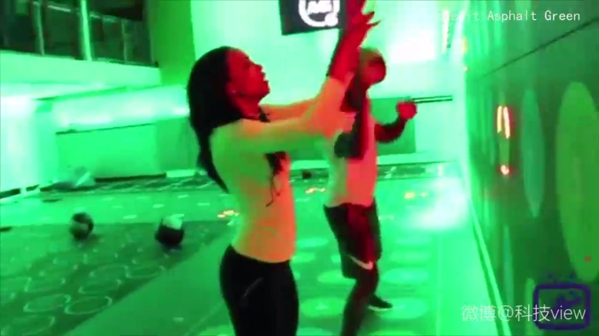

对没有健身习惯的普通人来说，健身游戏化是个很好的方向。//@奥运私人教练沈韦羲:#沈教练的每日任务# 高强度训练，人多，还灯光昏暗，训练安全性在哪里？顾此失彼，得不偿失……老外的创意有时只是为了夺眼球，假装自己与众不同，可惜忘本！
@科技view:
【让你停不下来的健身房】纽约Asphalt Green 运动及娱乐中心，推出了一种新式健身房，让人运动停不下。健身房的墙面和地板上有很多数字、发光的灯圈，有点像是跳舞机和游戏房，一切健身房常见的动作都游戏化了，人们根据灯光和声音的指导“通关”，训练变得更加轻松有趣，不知不觉中就燃烧了脂肪。#创意科技view#  科技view的秒拍视频
科技view的秒拍视频

34万次播放
00:60